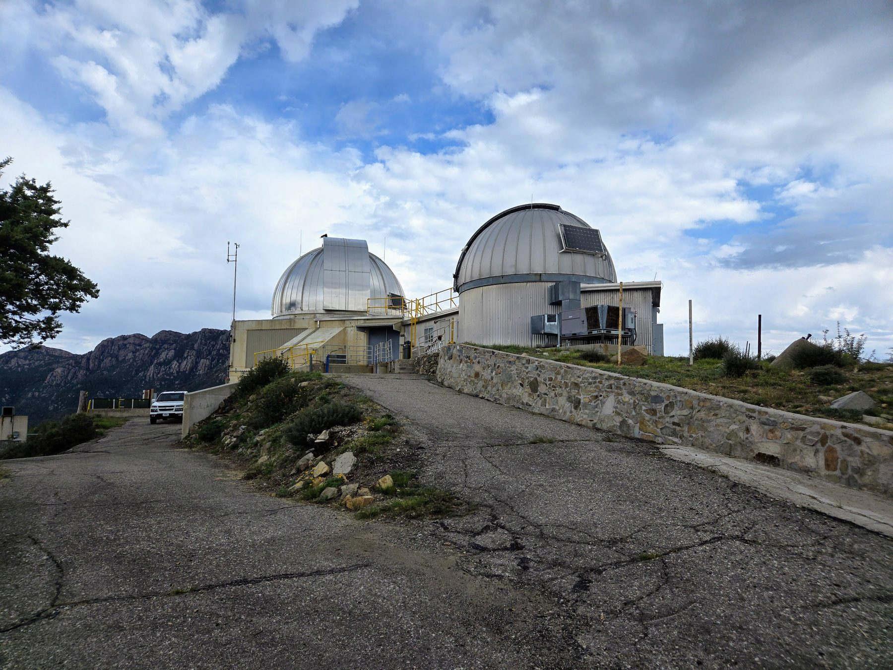

Membership
Join the Smithsonian National Astronomy Council
SNAC members hear about discoveries before the public, straight from the astronomers making them — with virtual science forums, an annual Science Summit, and invitation-only travel to eclipses, rocket launches, and telescope sites. Membership starts at $1,500.